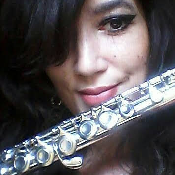

Carolina Tinoco
Analista de Sistemas & Frontender Iniciante


Olá! Seja bem-vindo(a)!
Desde pequenina, nos anos 1980, me apresento profunda e curiosa - e, por sinal, o reflexo disso é a persistência por sendas desafiadoras do conhecimento humano.
Sou artista plástica, escritora/poetisa, musicista, analista de sistemas e aspirante à especialização em desenvolvimento frontend.
Amo uma boa música - que vai da erudita ao rock'n'roll progressivo e psicodélico.
Aprecio muito a leitura, igualmente - especialmente a Filosofia e seus rizomas.
Por enquanto, estou a estudar com mais afinco HTML, CSS e JavaScript.